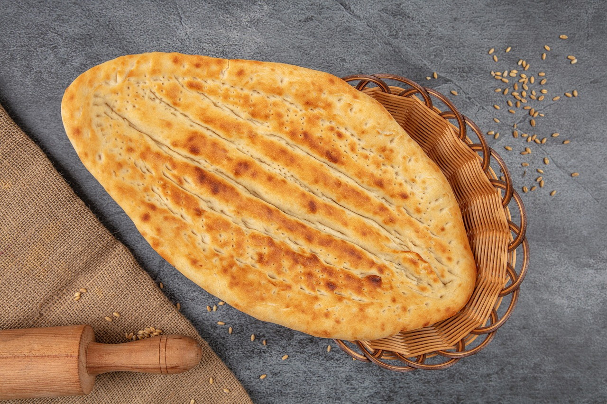
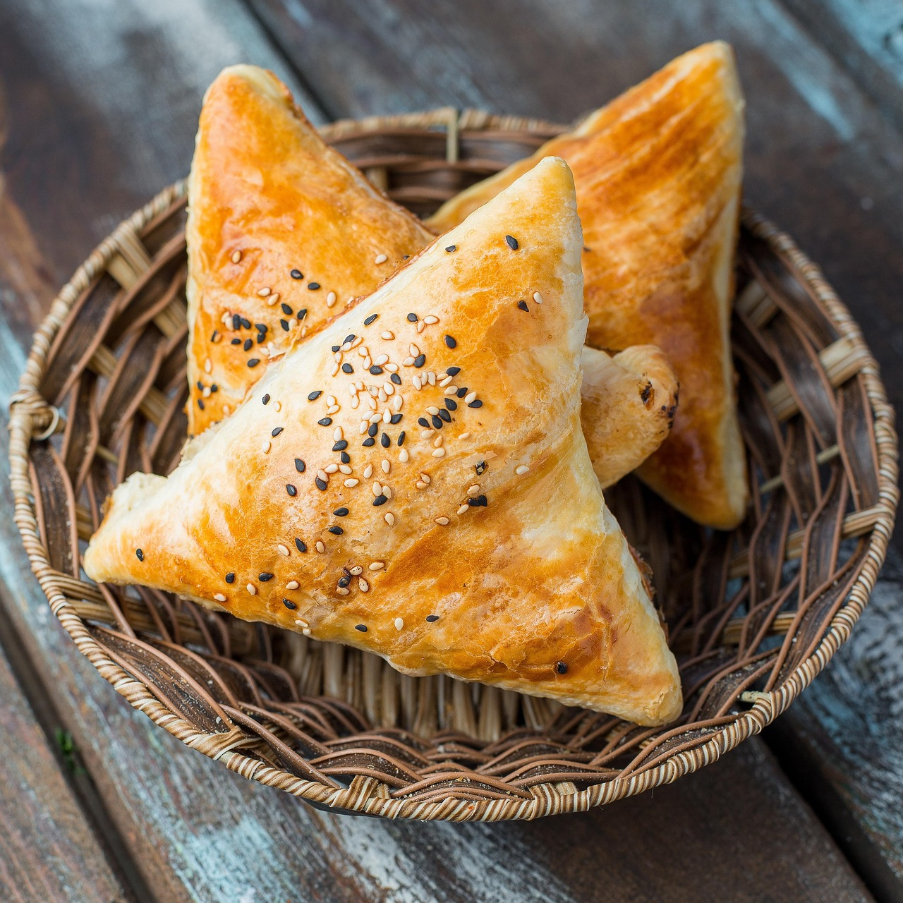
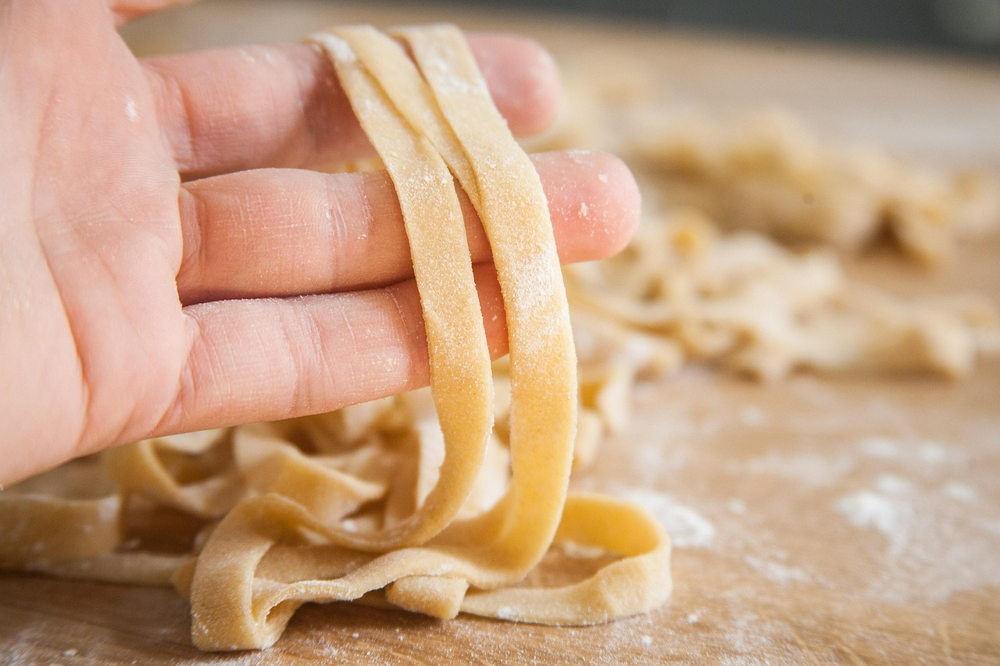
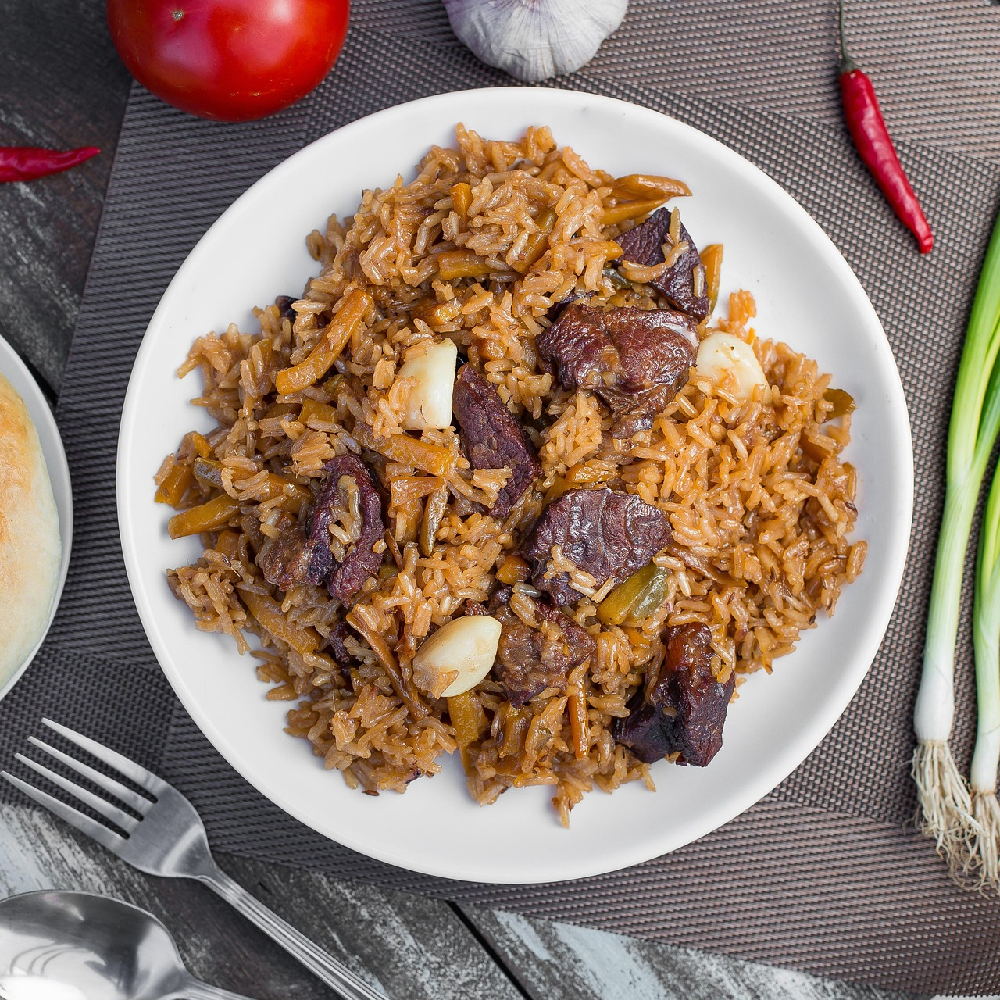
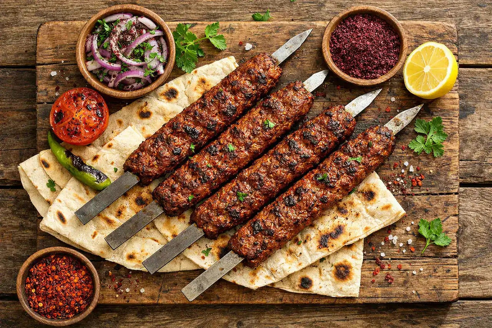
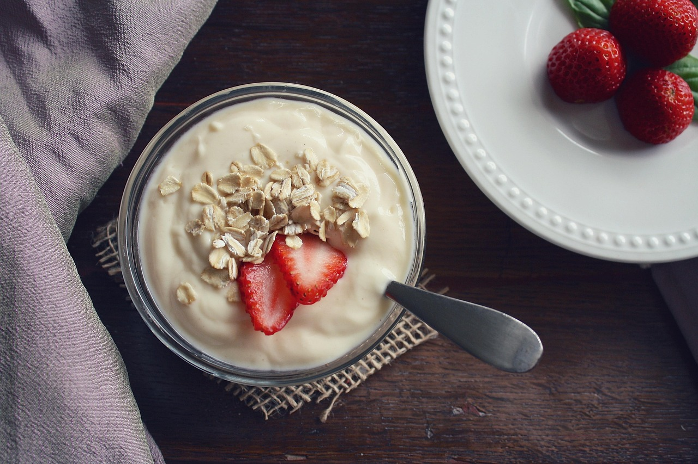
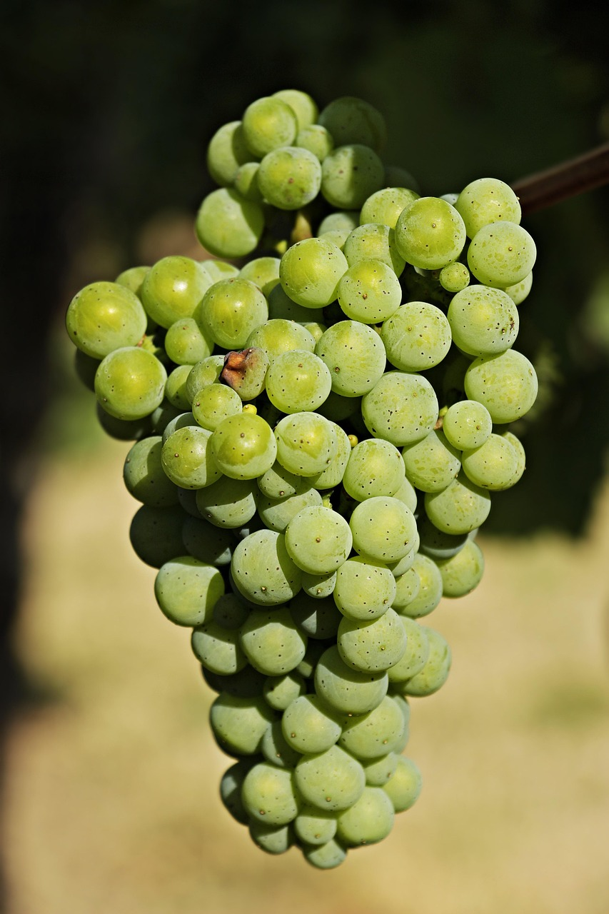
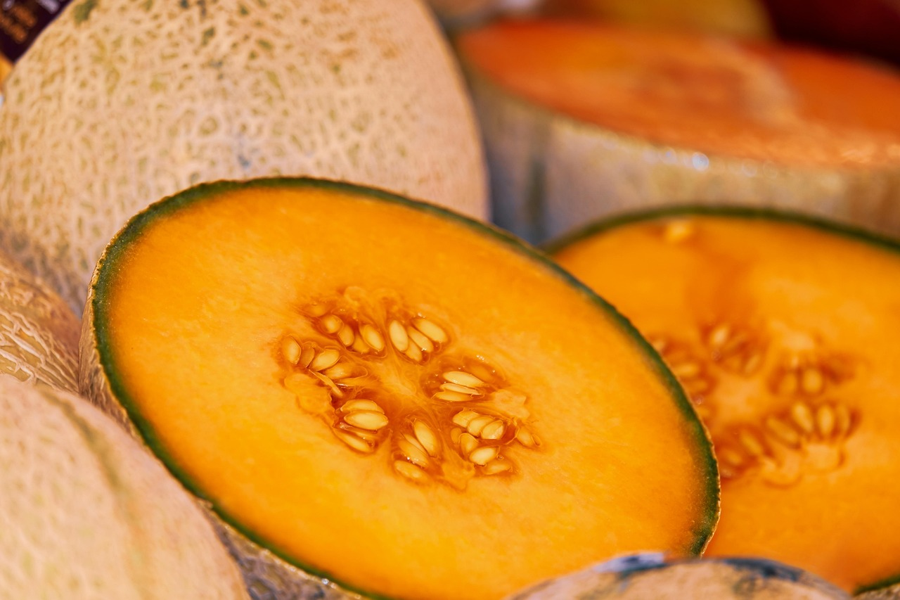
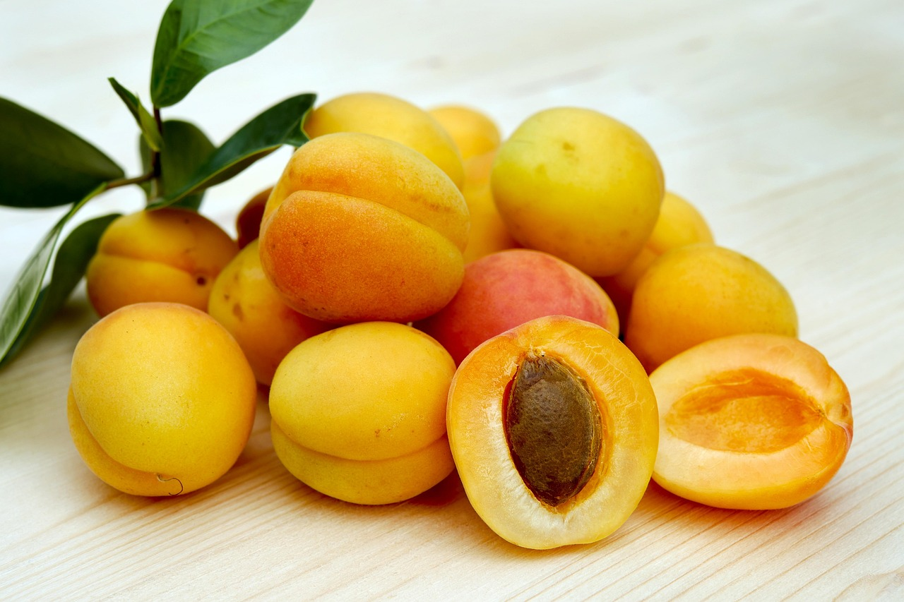
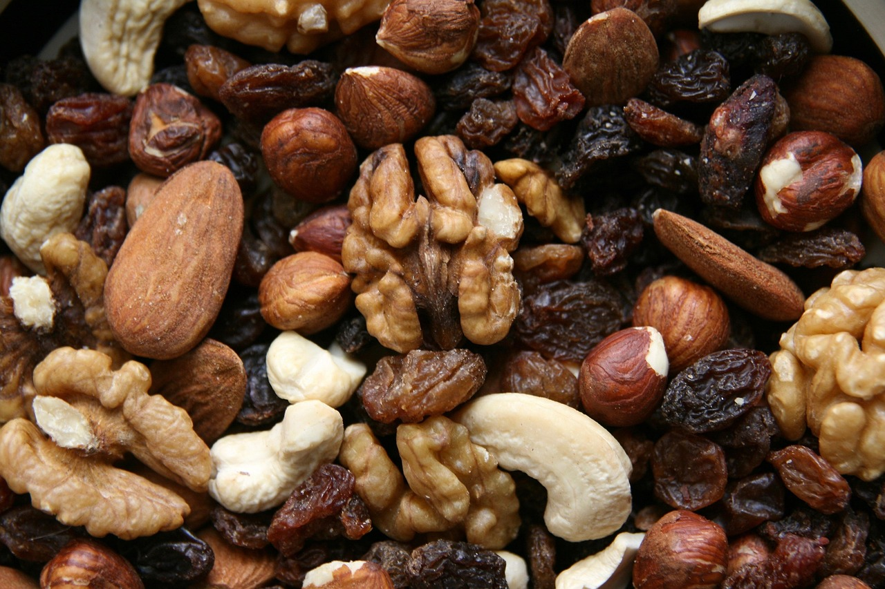

新疆美食圖鑑：從烤包子到大盤雞，什麼真的該吃
新疆，是肉食與瓜果的天堂。這裡的飲食脫胎於絲路與遊牧：麵食分量驚人、羊肉鮮甜不膻、瓜果甜到犯規。但第一次來的人，很容易在巴扎裡被「切糕」或過度觀光的烤肉攤勸退。這篇圖鑑按五大類幫你理清楚——什麼該吃、什麼淺嚐就好。
一、先搞懂新疆菜的邏輯
- 麵食為主、羊肉為王：小麥與牛羊是餐桌主力，蔬菜相對少，南方口味的人要稍微適應。
- 分量文化：一份拌麵或一個饢就是一餐，別用內地份量估算；兩人點一份大盤雞通常就夠。
- 民族風味交融：維吾爾、哈薩克、回、漢族的吃法在此交疊，同一道菜在不同城市味道各異。
二、主食類：饢、拌麵、抓飯、包子
✅ 必吃
- 烤包子（薄皮包子）：皮薄餡大、羊肉洋蔥汁水飽滿，剛出坑最香。
- 饢：新疆的「國民麵包」，芝麻饢、油饢、窩窩饢各有性格；大饢能放好幾天，適合路上當乾糧。
- 拌麵（拉條子）：手工拉麵配炒菜，過油肉、韭菜、番茄雞蛋都經典；麵可以免費續。
- 抓飯：米飯、羊肉、胡蘿蔔、洋蔥一鍋悶出，油亮噴香；午市現炒的那鍋最值得吃。
- 丁丁炒麵：把麵切成丁炒，更入味、更好夾。
⚠️ 地雷與提醒
- 分量超大，先點少再追加，別一口氣點滿一桌。
- 抓飯中午吃最對味，晚上多是微波加熱，香氣差一截。




三、烤肉類：紅柳、羊肉串、缸肉、烤魚
✅ 必吃
- 紅柳枝烤肉：用紅柳嫩枝串肉，木香滲進羊肉，比鐵簽更有層次。
- 炭烤羊肉串：肥瘦相間、孜然辣椒到位，路邊现烤的最有靈魂。
- 缸子肉：羊肉、馬鈴薯、番茄放進搪瓷缸慢燉，湯鮮肉嫩，一人一缸。
- 布爾津烤狗魚：額爾齊斯河的冷水魚，肉細無刺，配河堤夜市剛好。
⚠️ 地雷與提醒
- 顏色鮮紅發亮、醃得過透的肉要小心，可能加了色素或嫩肉粉；認準現切現串的攤子。
- 非沿海城市的「海鮮燒烤」儘量避開，新鮮度難保證。

四、湯飯類：曲曲、湯飯、粉湯
✅ 必吃
- 曲曲：新疆版餛飩，皮薄餡鮮，羊肉湯底清甜，早餐或夜宵都合適。
- 酸湯餃子／湯飯：麵條揪成片煮進番茄酸湯，開胃暖胃。
- 粉湯：節慶才有的羊肉粉條湯，濃厚暖身。
⚠️ 地雷與提醒
- 早餐的胡辣湯偏辣偏鹹，外地胃第一天淺嚐即可。
五、奶製品與甜點：酸奶、奶皮子、瑪拉奇
✅ 必吃
- 手工酸奶：濃稠帶酸，加砂糖或蜂蜜才順口；夜市一碗冰鎮的最解膩。
- 奶皮子：牛奶表層凝出的脂膜，香濃不膩，配饢絕配。
- 瑪拉奇：新疆手工冰淇淋，奶香十足、冰涼綿密。
- 饊子：節慶油炸麵食，脆香，當零嘴。
⚠️ 地雷與提醒
- 切糕（瑪仁糖）路邊常按重量現切，份量與計價不透明，容易買貴；想試去正規店或問清再買。
- 乳糖不耐的人，奶製品淺嚐、別貪杯。

六、瓜果：什麼季節吃什麼
✅ 必吃
- 吐魯番葡萄（8–9月）：無核白、馬奶子，甜度高。
- 哈密瓜（7–9月）：網紋蜜瓜，香氣濃。
- 庫爾勒香梨（9–10月）：皮薄汁多、落地即碎。
- 阿克蘇蘋果、西瓜、甜瓜：秋季一路吃到。
- 南疆杏與杏乾、各式乾果：曬製的甜、當零嘴或伴手禮都合適。
⚠️ 地雷與提醒
- 瓜果極甜，糖尿病人留意；路邊切開的瓜果注意攤子衛生。




七、點菜實戰守則
- 先點少、吃完再補：寧可續麵，也不要剩一桌。
- 問老闆「今天什麼最新鮮」：比看菜單更準。
- 大盤雞加皮帶麵：拌進湯汁，精華都在那口湯裡。
- 素食者務必提前說：新疆葷食為主，臨時找素菜選擇少。
📌 一句話總結：新疆好吃在「現烤、現煮、現宰」的新鮮，越在地、越簡單的店越穩。與其衝著網紅店，不如跟著本地人排隊的那家。
📷 圖片來源：部分食物實拍示意圖來自 Pixabay 免費授權素材，以及網絡公開的新疆美食實拍（僅作示意，如有版權疑慮請聯絡我們移除）。
相關閱讀：烏魯木齊 City Walk ｜ 喀什 City Walk ｜ 新疆四季旅遊攻略